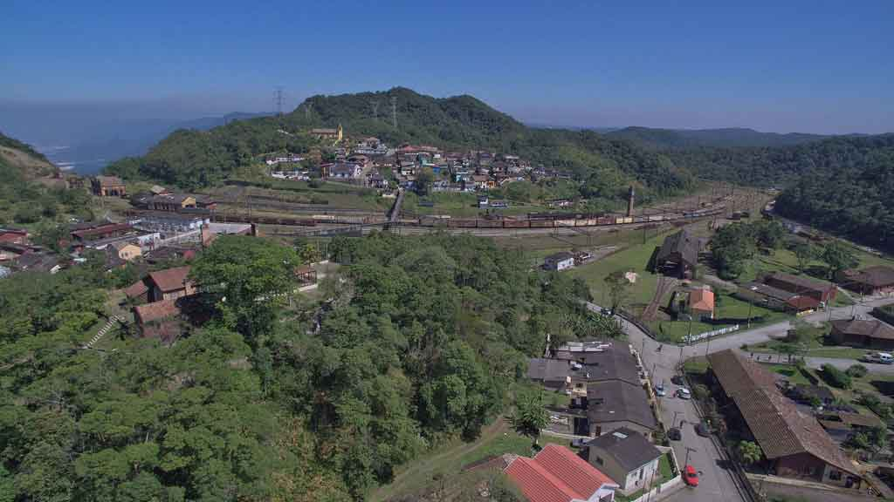

Bandeira da Cidade de São Bernado do Campo, é constituída pela cor branca. Sua principal característica é por possui uma bandeira de coloração total branca a qual representa a paz almejada pelos seus habitantes, tendo o brasão municipal no centro.
O município de São Bernardo do Campo nasceu na Borda do Campo, mesma região onde existiu a histórica Villa de Santo André da Borda do Campo (1550-1560). (Oficialmente São Bernardo do Campo reporta-se à chamada “Villa” de João Ramalho (1553) para comemorar seu aniversário de fundação, mas estudos revelam que o município tem origem bem mais recente, visto que o primitivo povoado sem deixar vestígios).
Sendo a região local de passagem para aqueles que do Planalto se dirigiam ao porto de Santos, em especial as tropas carregando mercadorias e que aqui faziam pouso, começa a se desenvolver na fazenda dos Monges Beneditinos, ao redor de uma capela por eles construída em 1717, um povoado, às margens dos Ribeirão dos Meninos, região do atual Bairro Rudge Ramos (no local onde hoje está instalado o Carrefour Vergueiro).
Pelos primitivos e novos caminhos, pelas velhas fazendas, registram-se a presença do português desbravador, do índio e do negro escravo. Tendo-se formado e crescido em terras particulares dos Beneditinos, o povoado não pôde ser oficializado, sendo por isso transferido para outro trecho do velho Caminho do Mar, onde está hoje a Igreja Matriz (Largo da Matriz, na rua Marechal Deodoro); esta transferência do povoado ocorreu em princípios do século XIX. Ali, em 1812, de subúrbio da Capital o povoado foi elevado à categoria de Freguesia.
Em 1877 é instalado, nas terras desapropriadas da fazenda dos Beneditinos, o Núcleo Colonial de São Bernardo, que vai dar nova vida a Villa. Constituiu-se 15 linhas coloniais que posteriormente originaram os atuais bairros de São Bernardo do Campo. A presença do imigrante, majoritariamente italiano, é predominante nesse fim de século XIX e início do século XX, contribuindo para ampliar a miscigenação. O cultivo da terra é intensificado. Planta-se, colhe-se, fabrica-se, produz-se... Os campos vão sendo devastados, as matas derrubadas, as estradas alargadas, ruas corrigidas e calçadas, as vilas edificadas e casas construídas.
O nome – São Bernardo – deve-se à denominação da fazenda dos Monges Beneditinos, onde havia uma capela dedicada ao Santo, ao redor da qual surgiu o primitivo povoado de 1717. Com a exploração da madeira, as serrarias aparecem, registrando a tendência industrial da Villa. Desenvolve-se a indústria moveleira ao lado da têxtil. No século XX, com a construção da Represa Billings, alguns núcleos coloniais de imigrantes italianos, formados no século XIX, são atingidos por suas águas.
Fonte: https://cidades.ibge.gov.br/brasil/sp/sao-bernardo-do-campo
São Bernado do Campo possui diversos pontos turísticos, locais de visitação turística com relevância cultural e/ou natural, com a possibilidade de contemplação, lugares incríveis para você visitar é o que não falta! Para te ajudar separamos 3 que você precisa conhecer.
O Parque Municipal Virgílio Simionato, mais conhecido como Parque Estoril, ocupa uma área de mais de 370 mil m², no bairro Riacho Grande, pertinho da prainha citada acima. Comparado a um oásis em meio à cidade para quem gosta de espaços ao ar livre, no local você encontra lanchonetes, um zoológico com mais de 450 espécies de animais, lago com pedalinho, trilhas ecológicas e até um teleférico para ver a paisagem do alto!
Quem gosta de adrenalina pode se divertir com atividades de arvorismo, passeios de escuna e canoagem. O Parque Estoril tem atrações para a família toda, com instalações adaptadas para receber pessoas com mobilidade reduzida e atividades para todas as idades.

Um dos principais atrativos da cidade é a Estância Alto da Serra, o maior complexo cultural do ABC Paulista, com vista para o Parque Estadual da Serra do Mar, área de 950 mil m² e capacidade para receber até 15 mil pessoas.
O local recebe os mais diferentes tipos de eventos, desde shows de música sertaneja a feiras, exposições e festas particulares.
Mais uma opção para quem gosta de atividades ao ar livre! O Parque Chácara Silvestre é um ponto turístico que parece até “mil e uma utilidades”. Os visitantes encontram playgrounds, pista de caminhada, quadra coberta, centro de convivência e até o Centro de Referência das Culturas Populares Tradicionais, instalado em um casarão histórico de 1930.
No local é possível fazer piqueniques, praticar esportes e aprender mais sobre a cultura brasileira e a tradição dos povos do nosso país, como indígenas, quilombolas e outros.

Fonte: https://www.passagenspromo.com.br/blog/sao-bernardo-do-campo/
Orlando Morando Júnior (São Bernardo do Campo, 24 de agosto de 1974) é um empresário do ramo supermercadista e político brasileiro, filiado ao Partido da Social Democracia Brasileira (PSDB), atualmente prefeito da cidade de São Bernardo do Campo. É casado com a deputada estadual de São Paulo, Carla Morando.
Em 2008, licenciou-se do cargo de deputado para candidatar-se à prefeitura de São Bernardo do Campo pelo PSDB, na coligação "Melhor para São Bernardo", tendo-se como Vice, Edinho Montemor do PSB. Foi derrotado em segundo turno, obtendo 41,81% dos votos, contra 58,19% do candidato eleito Luiz Marinho (PT).Em 2016, candidatou-se à prefeitura de São Bernardo do Campo novamente pelo PSDB, sendo eleito no segundo turno, derrotando Alex Manente (PPS), obtendo 59,94% dos votos válidos, contra 40,06% do adversário. O Diário do Grande ABC relatou que em seu primeiro mandato a dívida da cidade de R$ 1,61 bilhão teve um acréscimo de 91,1%.
Fonte: https://www.saobernardo.sp.gov.br/web/sbc